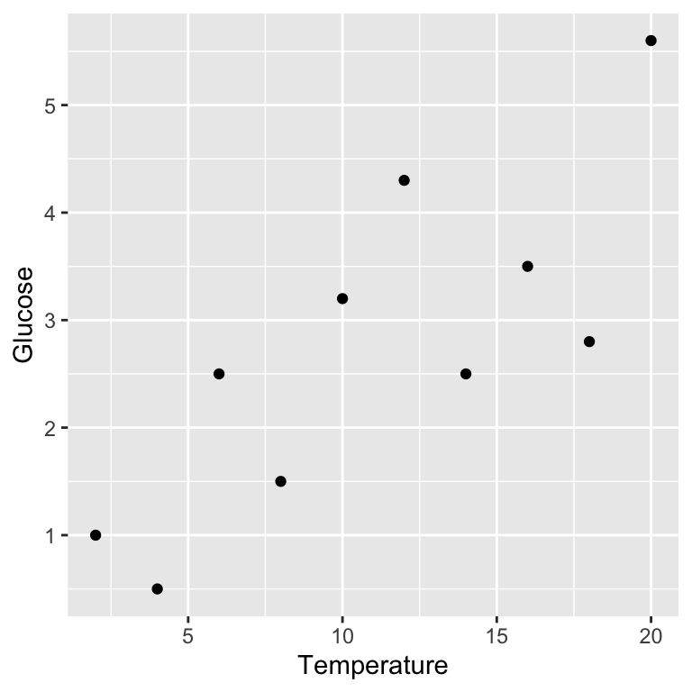

Chapter 13 Simple regression in R
Our goal in this chapter is to learn how to work with regression models in R. We’ll start with the example problem and the data, and then work through model fitting, significance testing, and finally, presenting the results.
13.1 Introduction
A plant physiologist studying the process of germination in the broad bean (Vicia faba) is interested in the relationship between the activity of the enzyme amylase and the temperature at which the germinating beans are kept. As part of this work, she carries out an experiment to find the relationship between glucose release (from the breakdown of starch by amylase) and temperature (over the range 2 - 20C). The data obtained from such an experiment are given below.
| Temperature (\(C\)) | 2 | 4 | 6 | 8 | 10 | 12 | 14 | 16 | 18 | 20 |
| Glucose (\(\mu g\) \(mg^{-1}\) dry weight) | 1.0 | 0.5 | 2.5 | 1.5 | 3.2 | 4.3 | 2.5 | 3.5 | 2.8 | 5.6 |
We want to work out whether there a statistically significant relationship between temperature and glucose release (and hence, presumably, amylase activity). That’s a job for linear regression.
We will be using this new data set to demonstrate how to conduct simple regression in R. The data live in the ‘GLUCOSE.CSV’ file. The code below assumes those data have been read into a tibble called vicia_germ. Set that up if you plan to work along.
13.1.1 First steps
We start by using glimpse to see what resides within vicia_germ:
glimpse(vicia_germ)## Rows: 10
## Columns: 2
## $ Temperature <dbl> 2, 4, 6, 8, 10, 12, 14, 16, 18, 20
## $ Glucose <dbl> 1.0, 0.5, 2.5, 1.5, 3.2, 4.3, 2.5, 3.5, 2.8, 5.6There are just two numeric variables. The first column (Temperature) contains the information about the experimental temperature treatments, and the second column (Glucose) contain the glucose measurements.
Notice that we refer to the different temperatures as ‘experimental treatments’. This is because these data are from an experiment where temperature was controlled by the investigator. We’ll discuss this terminology in more detail in the Principles of Experimental Design chapter.
13.1.2 Visualising the data
We should visualise the data next so that we understand it more. A simple scatter plot will do:
ggplot(vicia_germ, aes(x = Temperature, y = Glucose)) +
geom_point()
Remember, Glucose is the response variable and Temperature is the predictor variable, so they belong on the \(y\) and \(x\) axes, respectively.
Variables and axes
Be careful when you produce a scatter plot to summarise data in a regression analysis. You need to make sure the two variables are plotted the right way around with respect to the \(x\) and \(y\) axes: place the response variable on the \(y\) axis and the predictor on the \(x\) axis. Nothing says, “I don’t know what I’m doing,” quite like mixing up the axes.
Because linear regression involves fitting a straight line through our data, it only makes sense to fit this model if the relationship between the two variables is linear. Plotting our data lets us see whether or not there appears to be a linear relationship. The scatter plot we produced above suggests that, in this case, the relationship between \(x\) and \(y\) is linear.
Assumptions
A linear relationship between the predictor and response variables is not the only assumption that we have to make when we fit a linear regression. We’ll come back to the other assumptions and how to check whether they have been met in the Assumptions and Diagnostics chapters, respectively. For now you should just be aware that there are assumptions that you should check when working with your own data.
13.2 Model fitting and significance tests
Carrying out a regression analysis in R is a two step process.
The first step involves a process known as fitting the model (or just model fitting). In effect, this is the step where R calculates the best fit line, along with a large amount of additional information needed to generate the results in step two. We call this step model fitting because, well, we end up fitting the straight line model to the data.
How do we fit a linear regression model in R? We will do it using the lm function. The letters ‘lm’ in this function name stand for ‘linear model’. We won’t say much more at this point other than point out that a linear regression is a particular case of a general linear model. R doesn’t have a special regression function.
Here is how we fit a linear regression in R using the enzyme data:
vicia_model <- lm(Glucose ~ Temperature, data = vicia_germ)This should look quite familiar. We have to assign two arguments:
The first argument is a formula. We know this because it includes a ‘tilde’ symbol:
~. The variable name on the left of the~should be the response variable. The variable name on the right should be the predictor variable. These areGlucoseandTemperature, respectively. Make sure you get these the right way round when carrying out regression.The second argument is the name of the data frame or tibble object that contains the two variables listed in the formula (
vicia_germ).
How does R knows we want to carry out a regression?
How does R know we want to use regression? After all, we didn’t specify this anywhere. The answer is that R looks at what type of variable Temperature is. It is numeric, and so R automatically carries out a regression. If it had been a factor or a character vector (representing a categorical variable), R would have carried out a different kind of analysis, called a one-way Analysis of Variance (ANOVA). Many of the models we examine in this book are very similar and can be fitted using the lm function. The only thing that really distinguishes them is the type of variables that appear to the right of the ~ in a formula: if they are categorical variables, we end up fitting an ANOVA model, while numeric variables lead to a regression.
The key message is that you have to keep a close eye on the type of variables you are modelling to understand what kind of model R will fit.
Notice that we did not print the results to the console. Instead, we assigned the result a name (vicia_model). This now refers to a fitted model object. What happens if we print a regression model object to the console?
print(vicia_model)##
## Call:
## lm(formula = Glucose ~ Temperature, data = vicia_germ)
##
## Coefficients:
## (Intercept) Temperature
## 0.5200 0.2018This prints a quick summary of the model we fitted and some information about the ‘coefficients’ of the model. The coefficients are the intercept and slope of the fitted line: the intercept is always labelled (Intercept) and the slope is labelled with the name of the predictor variable (Temperature in this case). We’ll come back to these coefficients once we have looked at how to compute p-values.
The second step of a regression analysis involves using the fitted model to assess statistical significance. We usually want to determine whether the slope is significantly different from zero. That is, we want to know if the relationship between the \(x\) and \(y\) variables is likely to be real or just the result of sampling variation. Carrying out the required F test is actually very easy. The test relies on a function called anova. To use this function, all we have to do is pass it one argument—the name of the fitted regression model object:
anova(vicia_model)## Analysis of Variance Table
##
## Response: Glucose
## Df Sum Sq Mean Sq F value Pr(>F)
## Temperature 1 13.4411 13.4411 14.032 0.005657 **
## Residuals 8 7.6629 0.9579
## ---
## Signif. codes: 0 '***' 0.001 '**' 0.01 '*' 0.05 '.' 0.1 ' ' 1Let’s step through the output to see what it means. The first line informs us that we are looking at an Analysis of Variance Table—a set of statistical results derived from a general tool called Analysis of Variance. The second line reminds us what response variable we analysed (Glucose). Those parts are simple to describe at least, though the Analysis of Variance reference may seem a little cryptic. In a nutshell, every time we carry out an F-test we are performing some kind of Analysis of Variance because the test boils down to a ratio of two variances.
The important part of the output is the table at the end:
## Df Sum Sq Mean Sq F value Pr(>F)
## Temperature 1 13.4411 13.4411 14.032 0.005657 **
## Residuals 8 7.6629 0.9579This summarises the different parts of the F-test calculations: Df – degrees of freedom, Sum Sq – the sum of squares, Mean Sq – the mean square, F value – the F-statistic, Pr(>F) – the p-value. These were touched on in the last chapter.
The F-statistic (variance ratio) is the key term. When working with a regression model, this quantifies how much variability in the data is explained when we include the best fit slope term in the model. Larger values indicate a stronger relationship between \(x\) and \(y\). The p-value gives the probability that the relationship could have arisen through sampling variation if there were no real association. As always, a p-value of less than 0.05 is taken as evidence that the relationship is real, i.e. the result is statistically significant.
We should also note down the two degrees of freedom given in the table because these will be needed when we report the results.
13.2.1 Extracting a little more information
There is a second function, called summary, that can be used to extract a little more information from the fitted regression model:
summary(vicia_model)##
## Call:
## lm(formula = Glucose ~ Temperature, data = vicia_germ)
##
## Residuals:
## Min 1Q Median 3Q Max
## -1.35273 -0.77909 -0.08636 0.74227 1.35818
##
## Coefficients:
## Estimate Std. Error t value Pr(>|t|)
## (Intercept) 0.52000 0.66858 0.778 0.45909
## Temperature 0.20182 0.05388 3.746 0.00566 **
## ---
## Signif. codes: 0 '***' 0.001 '**' 0.01 '*' 0.05 '.' 0.1 ' ' 1
##
## Residual standard error: 0.9787 on 8 degrees of freedom
## Multiple R-squared: 0.6369, Adjusted R-squared: 0.5915
## F-statistic: 14.03 on 1 and 8 DF, p-value: 0.005657This is easiest to understand if we step through the constituent parts of the output. The first couple of lines just remind us about the model we fitted
## Call:
## lm(formula = Glucose ~ Temperature, data = vicia_germ)The next couple of lines aren’t really all that useful—they summarise some properties of the residuals–so we’ll ignore these.
The next few lines comprise a table that summarises some useful information about the coefficients of the model (the intercept and slope):
## Coefficients:
## Estimate Std. Error t value Pr(>|t|)
## (Intercept) 0.52000 0.66858 0.778 0.45909
## Temperature 0.20182 0.05388 3.746 0.00566 **The Estimate column shows us the estimated intercept and slope of the regression. We saw these earlier when we printed the fitted model object to the console.
Staying with this table, the next three columns (Std. Error, t value and Pr(>|t|)) show us the standard error associated with each coefficient, the corresponding t-statistics, and the p-values. Remember standard errors? These measure the uncertainty of the sampling distributions associated with various estimates from a sample. We discussed standard errors in the context of sample means. One can calculate a standard error for many different kinds of quantities, including the intercept and slope of a regression model.
We can use the standard errors to evaluate the significance of the coefficients via t-statistics. In this case, the p-values associated with these t-statistics indicate that the intercept is not significantly different from zero (p>0.05), but that the slope is significantly different from zero (p<0.01).
Notice that the p-value associated with the slope coefficient is the same as the one we found when we used the anova function. This is not a coincidence—anova and summary test the same thing when working with simple linear regression models. This is not generally true for other models involving the lm function.
The only other part of the output from summary that is of interest now is the line containing the Multiple R-squared value:
## Multiple R-squared: 0.6369, Adjusted R-squared: 0.5915This shows the \(R\)-squared (\(R^{2}\)) of our model. It tells you what proportion (sometimes expressed as a percentage) of the variation in the data is accounted for by the fitted line. If \(R^{2}=1\) the line passes through all the points on the graph (all the variation is accounted for) and if \(R^{2}\approx 0\%\) the line explains little or none of the variation in the data. The \(R^{2}\) value here is 0.64. This is very respectable but still indicates that there are other sources of variation which remain unexplained by the line (e.g. differences between beans, inaccuracies in the assay technique)8.
13.3 Presenting results
From the preceding analysis we can conclude:
There is a significant positive relationship between the incubation temperature (°C) and glucose released (\(\mu g mg^{-1}\) dry weight) in germinating bean seeds (\(y=0.52+0.20x\), F=14, d.f.=1,8, p<0.01).
Don’t forget to quote both degrees of freedom in the result. These are obtained from the ANOVA table produced by anova and should be given as the slope degrees of freedom first (which is always 1), followed by the error degrees of freedom.
If the results are being presented only in the text, it is usually appropriate to specify the regression equation and the significance of the relationship. This allows the reader to see in which direction and how steep the relationship is and perhaps use the equation in further calculations. It may also be useful to give the units of measurement—though these should already be stated in the Methods. Often, however, we will want to present the results as a figure, showing the original data and the fitted regression line. In this case, most of the statistical detail can go in the figure legend instead.
13.3.1 Plotting the fitted line and the data
We already know how to make a scatter plot. The only new trick we need to learn is how to add the fitted line. Remember the output from the summary table—this gave us the intercept and slope of the best fit line. We could extract these (there is a function called coef that does this), and using our knowledge of the equation of a straight line, use them to then calculate a series of points on the fitted line. However, there is an easier way to do this using the predict function.
This next part on predictions is usually confusing at first. Don’t worry! You may have to come back to it a few times before it sinks in. At first reading, try to focus on the logic of the calculations without worrying too much about the details.
To use predict, we have to let R know the values of the predictor variable for which we want predictions. In the bean example, the temperature was varied from 2-20 °C, so it makes sense to predict glucose concentrations over this range. Therefore the first step in making predictions is to generate a sequence of values from 2 to 20, placing these inside a data frame:
pred_data <- data.frame(Temperature = seq(2, 20, length.out = 25))This uses seq to make a sequence of 25 evenly spaced numbers from 2 to 20. Notice that we gave the sequence the exact same name as the predictor variable in the regression (Temperature). This is important: the name of the numeric sequence we plan to make predictions from has to match the name of the predictor variable in the fitted model object.
Once we have set up a data frame to predict from (pred_data) we are ready to use the predict function:
predict(vicia_model, pred_data)## 1 2 3 4 5 6 7 8
## 0.9236364 1.0750000 1.2263637 1.3777273 1.5290909 1.6804546 1.8318182 1.9831818
## 9 10 11 12 13 14 15 16
## 2.1345455 2.2859091 2.4372727 2.5886364 2.7400000 2.8913636 3.0427273 3.1940909
## 17 18 19 20 21 22 23 24
## 3.3454545 3.4968182 3.6481818 3.7995454 3.9509091 4.1022727 4.2536363 4.4050000
## 25
## 4.5563636This take two arguments: the first is the name of the model object (vicia_model); the second is the data frame (pred_data) containing the values of the predictor variable at which we want to make predictions. The predict function generated the predicted values in a numeric vector and printed these to the console.
To be useful, we need to capture these somehow, and because we want to use ggplot2, these need to be kept inside a data frame. We can use mutate to do this:
pred_data <- mutate(pred_data, Glucose = predict(vicia_model, pred_data))Look at the first 10 rows of the resulting data frame:
head(pred_data, 10)## Temperature Glucose
## 1 2.00 0.9236364
## 2 2.75 1.0750000
## 3 3.50 1.2263637
## 4 4.25 1.3777273
## 5 5.00 1.5290909
## 6 5.75 1.6804546
## 7 6.50 1.8318182
## 8 7.25 1.9831818
## 9 8.00 2.1345455
## 10 8.75 2.2859091The pred_data is set out much like the data frame containing the experimental data. It has two columns, called Glucose and Temperature, but instead of data, it contains predictions from the model. Plotting these predictions along with the data is now easy:
ggplot(pred_data, aes(x = Temperature, y = Glucose)) +
geom_line() + geom_point(data = vicia_germ) +
xlab("Temperature (°C)") + ylab("Glucose concentration") +
theme_bw(base_size = 22)Notice that we have to make ggplot2 use the vicia_germ data (i.e. the raw data) when adding the points. We also threw in a little theming to make the plot look nicer.
Here is a quick summary of what we just did:
- Using
seqanddata.frame, we made a data frame with one column containing the values of the predictor variable we want predictions at. - We then used the
predictfunction to generate these predictions, adding them to the prediction data withmutate. - Finally, we used ggplot2 to plot the predicted values of the response variable against the predictor variable, remembering to include the data.
13.4 What about causation?
No discussion of regression would be complete without a little sermon on the fact that just because you observe a (significant) relationship between two variables, this does not necessarily mean that the two variables are causally linked. Suppose we find a negative relationship between the density of oligochaete worms (the response variable) and the density of trout (the predictor variable) in a sample of different streams. In that case, this need not indicate that the trout reduce the numbers of oligochaetes. Oligochaete numbers are often very high in slow-flowing, silty streams where they live in the sediments, whereas trout prefer faster flowing, well-oxygenated, stony streams. A negative correlation could occur simply for that reason. There are many situations in biology where a relationship between two variables can occur, not because there is a causal link between them but because each is related to a third variable (e.g. habitat).
This difficulty must always be considered when interpreting relationships between variables in data collected from non-experimental situations. However, it is often said that regression analysis can never be used to infer a causal link because of this problem. This is incorrect. What is important is how the data are generated, not the statistical model used to analyse them.
Imagine ten plants were randomly assigned to be grown under ten different light intensities, with all other conditions held constant. In those circumstances it would be entirely proper to analyse the effect of light level on plant height by a regression of plant height (\(y\)) against light level (\(x\)) and, if a significant positive straight-line relationship was found, to conclude that increased light level caused increased plant height. But the fact that we are experimentally producing an effect in plants randomly allocated to each light level is what gives us the confidence to draw a conclusion about causality. Light might not be the direct causal agent—maybe another factor (e.g. temperature) is varying along with light and causing the effect—but it must be at least indirectly related to plant growth because it was experimentally manipulated.
The
Adjusted R-squared:value can be ignored in this analysis—it is used when doing a form of regression called multiple regression, in which there is more than one \(x\) variable.↩︎